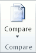

The legal blackline option compares two documents and displays only what changed between them. The documents that are being compared are not changed. The legal blackline comparison is displayed by default in a new third document.
If you want to compare changes from a number of reviewers, do not select this option. Choose Combine revisions from multiple authors into a single document instead.
Open the documents that you want to compare.
On the Review tab, in the Compare group, click Compare.

Click Compare two versions of a document (legal blackline).
Under Original document, browse for the document that you want to use as the original document.
Under Revised document, browse for the other document that you want to compare.
Click More, and then select the settings for what you want to compare in the documents. Under Show changes, choose whether you want to show character or word level changes.
If you do not want to display changes in a third document, choose which document you want the changes to appear in.
Important: Any options that you select under More will be the default options for comparison the next time you compare documents.
Click OK.
If either version of the document has tracked changes, Microsoft Word displays a message box. Click Yes to accept the changes and compare the documents.
Microsoft Office Word displays a new third document in which tracked changes in the original document are accepted, and changes in the revised document are shown as tracked changes.
The source documents that are being compared are not changed.